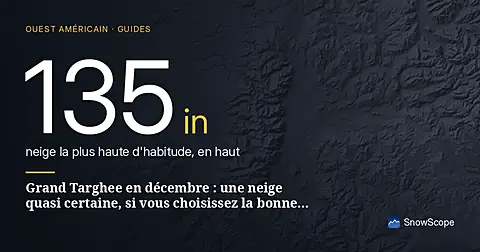
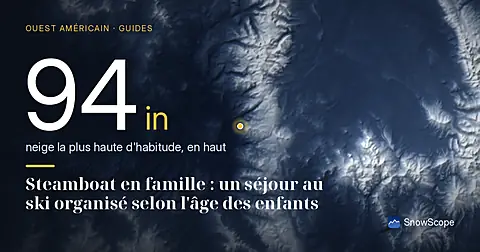
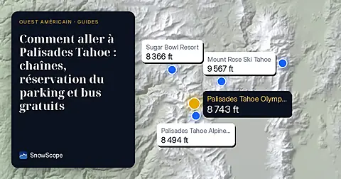

Bulletins neige · Ouest américain
Des bulletins neige quotidiens pour les skieurs : où est la neige, ce qui arrive et où skier, d'après la carte de neige SnowScope et les stations de mesure. Chaque chiffre vient des données du jour.

Beaver Mountain applique un tarif adulte unique de 75 $ pour la saison 2026-27. Notre historique d'enneigement montre que début décembre, c'est pile ou face ; la semaine avant Noël est bien plus sûre.

Le forfait adulte 2026/27 de Bridger Bowl est à 86 $ en ligne, 99 $ au guichet. Notre historique dit que la mi-décembre est un coup de pile ou face à mi-montagne ; fin décembre est plus sûr.

Indy Base Pass 419 $, Indy+ 469 $, deux jours dans chaque station partenaire. Nous l'avons comparé aux prix journaliers vérifiés de sept stations Indy en décembre, et à leurs chances de neige.

Les forfaits adultes de Lookout Pass pour 2026-2027 sont à 63 $ en semaine avec réservation, 75 $ le week-end. À mi-montagne, on avait 20 in (50 cm) le 15 décembre dans 85 % des hivers passés.

Les forfaits adultes 2026/27 de Montana Snowbowl sont à 78 $ en semaine et 85 $ le week-end. À mi-montagne, on avait 20 in (50 cm) au 15 décembre dans 83 % de nos hivers passés.


Les forfaits de Sunlight démarrent à 74 $ et son Sunny 6 Pack coûte 349 $ si acheté avant le 30 novembre 2026. À mi-montagne, on avait 20 in (50 cm) au 15 décembre dans 72 % des hivers.

Les forfaits journée complète à Timberline coûtent 129 $ hors pointe et 161 $ en pointe ; le forfait après-midi est à 96 $ hors pointe. La mi-pente conserve en général 52 in (132 cm) le 15 décembre.

De Ski Cooper (49 $ en semaine, 99 $ le week-end) à Mt. Baker (98,80 $ contre 115,42 $) : les écarts de prix de décembre vérifiés dans sept stations de l'Ouest américain, avec leurs chances de neige.

Le 3-Pack 2026/2027 de Schweitzer coûte 249 $, soit 83 $ par jour selon la station elle-même. Le sommet garde en général 54 in (138 cm) de neige au 15 décembre.

Brighton à partir de 72 $ contre Ski Cooper à 49 $ en semaine et Wolf Creek à 96 $ : les stations économiques de l'Utah et du Colorado comparées sur 46 hivers de neige en décembre.

Les forfaits journée de Brundage démarrent dès 65 $ certains jours ; à mi-montagne on avait 20 in (50 cm) de neige le 15 décembre dans 87 % de nos hivers passés. Des dates de fêtes à éviter.

Les forfaits journée adulte de Snow King démarrent à 100 $. Selon notre historique d'enneigement, le mi-versant affichait 20 in (50 cm) dès le 15 décembre dans 87 % des hivers : une façon économique de skier la vallée de Jackson.

Loveland vend des forfaits en ligne à 60 $ jusqu'au 13 décembre 2026, puis à 159 $ au guichet. La neige de début décembre est-elle assez bonne pour en profiter ? Nos 46 hivers passés répondent semaine par semaine.

Les forfaits en ligne du White Pass démarrent à 69 $ hors pointe et 89 $ les jours de pointe, et la mi-montagne avait 20 in (50 cm) de neige le 15 décembre dans 87 % des hivers passés.

Chez Wolf Creek, le forfait adulte coûte 96 $ les jours normaux et 110 $ les jours de pointe pour la saison 2026-2027 ; à mi-montagne, l'enneigement atteignait 34 in (87 cm) un 15 décembre type.

Les forfaits journée de Brighton démarrent à 72 $ pour 2026/27 en achat anticipé. À mi-montagne, on compte en général 37 in (94 cm) de neige le 15 décembre, contre 25 in (64 cm) à Park City.

16 stations de ski américaines économiques classées selon leurs chances de neige en décembre sur 46 hivers passés, avec les prix à la journée vérifiés : de 49 $ en semaine à 125 $ et plus.

Sur nos 46 derniers hivers, Grand Targhee affichait toujours au moins 20 in (50 cm) à mi-pente le 15 décembre. Le billet journée en ligne coûte entre 125 $ et 180 $ selon la date.

Le Mt. Baker en décembre : 46 in (116 cm) de neige à mi-montagne pour un 15 décembre type, et un forfait à 98,80 $ du lundi au jeudi, vendu uniquement sur place le jour même.

Une tempête le 4 novembre a laissé 8 à 13 inches de neige fraîche sur cinq stations d'altitude du Colorado, près d'Aspen. Cinq jours plus tard, la moitié avait disparu. Ce que cela veut dire pour vos journées de poudreuse.

Où décembre 2026 s'annonce plus ou moins enneigé du Montana au Nouveau-Mexique : la prévision saisonnière européenne et notre carte, massif par massif, avec le Colorado, l'Utah et les Rocheuses du Nord.

Vail en chiffres : un pic habituel d'environ 64 in (162 cm) à mi-pente sur 46 hivers passés, mars le mois le plus enneigé, plus domaine, accès et sécurité.

Steamboat, Colorado, en famille : ce qui convient aux tout-petits, aux enfants, aux ados et aux parents, avec la neige de 46 hivers passés à trois altitudes.

Comment passer un premier jour à Park City Mountain, Utah, et quand y aller : notre historique donne environ 71 in (180 cm) au pic habituel à mi-pente sur 46 hivers passés.

Mt Baker, État de Washington : environ 133 in (337 cm) au pic habituel à mi-pente sur 46 hivers passés, un record mondial de neige, aucun hébergement sur place.

Préparez Mammoth Mountain selon la saison : environ 93 in (235 cm) au pic habituel à mi-pente sur 46 hivers passés, mars le plus enneigé, longs printemps, hivers variables.

Les idées reçues sur Jackson Hole face aux faits et à notre historique : environ 80 in (204 cm) au pic habituel à mi-pente sur 46 hivers passés, sans baisse nette.

Rejoindre Telluride en hiver, aéroport par aéroport : Telluride Regional, Montrose, la route 145 avec la loi de traction du Colorado, et la télécabine gratuite vers Mountain Village.

Aller à Snowbird en hiver : une seule route (SR-210), la loi sur l'équipement de l'Utah, le bus de ski UTA et le trajet depuis l'aéroport.

Vers Palisades Tahoe en hiver : distances depuis Reno, chaînes obligatoires R-1 à R-3, parking réservé le week-end, bus TART gratuits.

Big Sky, Montana, facile à se représenter : 5 850 acres sous le Lone Peak, et une neige environ cinq fois plus épaisse près du sommet qu'en bas sur 46 hivers passés.

Aspen Snowmass comparé : Snowmass a environ 75 in (190 cm) au pic habituel à mi-pente sur 46 hivers passés, Aspen Mountain environ 69 in (174 cm). Terrain, accès, sécurité.

Environ 109 in (276 cm) : c'est le pic habituel d'Alta à mi-pente sur 46 hivers passés. Ici : pourquoi le snowboard reste à la maison, les meilleurs mois et comment monter le canyon.